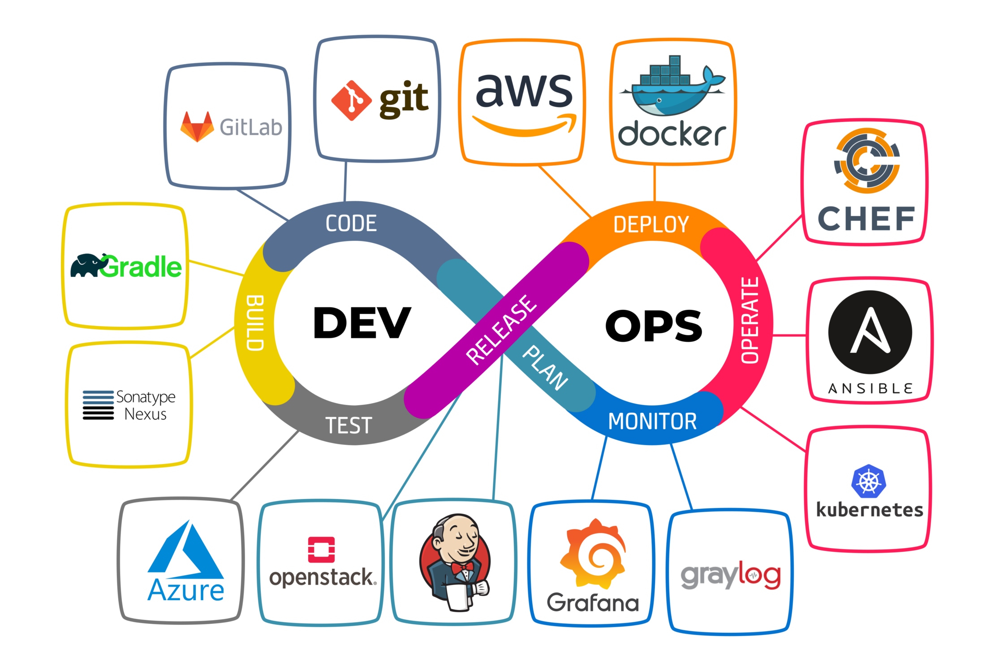

Vorgehensmodelle im Software-Engineering
Ein Projekt wie unsere Multiformat-Kollaborationsplattform „CanvasFlow“ programmiert sich nicht von selbst. Ohne klare Regeln, Rollen und Phasen versinkt jedes Entwicklerteam im Chaos. Vorgehensmodelle (Software Process Models) geben dem Softwarelebenszyklus eine Struktur. In diesem Dokument analysieren wir klassische (Wasserfall, V-Modell), agile (Scrum, Kanban) und moderne (DevOps) Ansätze und übertragen sie direkt in die Praxis unserer App-Entwicklung.
1a. Recherchephase – Grundlagen verstehen
i) Warum gibt es Vorgehensmodelle? Warum nicht „einfach drauflos entwickeln“?
Das „Einfach-drauflos-Entwickeln“ (oft Code & Fix genannt) funktioniert nur bei trivialen Hobby-Skripten. Bei echten Unternehmensprojekten wie „CanvasFlow“ führt dies unweigerlich zu Chaos, explodierenden Kosten und fehlerhafter Software (Spaghetti-Code). Vorgehensmodelle reduzieren das Risiko, indem sie den Entwicklungsprozess in überschaubare, kontrollierbare Phasen (Planung, Analyse, Design, Programmierung, Test, Betrieb) unterteilen. Sie definieren, wer (Rollen) was (Artefakte/Dokumente) wann (Phasen) zu tun hat, um planbare Qualität und Termintreue zu gewährleisten.
ii) Worin unterscheiden sich allgemein klassische von agilen Vorgehensmodellen?
iii) Müssen Vorgehensmodelle immer strikt eingehalten werden? (Stichwort: Tailoring)
Nein. Vorgehensmodelle sind selten ein starres Gesetzbuch (außer in sicherheitskritischen Branchen wie der Luftfahrt oder Medizin). Sie dienen vielmehr als Orientierung. In der Praxis wendet man das Prinzip des Tailorings (Zuschneiden/Anpassen) an: Das Modell wird an die spezifische Projektgröße, die Teamkultur und die Firmenvorgaben angepasst. Über das Maß der Umsetzung entscheiden oft das Project Management Office (PMO), der Projektleiter oder bei agilen Teams der Scrum Master gemeinsam mit dem Team.
1b. Klassische Vorgehensmodelle (Plan-driven)
i) Reines Wasserfallmodell
Das älteste Modell (Winston W. Royce, 1970). Die Phasen (Analyse → Design → Implementierung → Test → Betrieb) laufen streng sequenziell (hintereinander) ab. Jede Phase muss ein abgeschlossenes Dokument (z.B. Pflichtenheft) erzeugen, bevor die nächste beginnt. Ein Rücksprung ist theoretisch nicht vorgesehen.
Kritik: Sehr realitätsfern bei Anforderungsänderungen.ii) Erweitertes Wasserfallmodell
Hier wurde erkannt, dass Fehler passieren. Das erweiterte Modell erlaubt kontrollierte Rücksprünge (Iterationen) ausschließlich in die direkt vorangegangene Phase. Stellt man im „Test“ einen Fehler fest, darf man in die „Implementierung“ zurückspringen, um ihn zu beheben.
Vorteil: Realistischer als der reine Wasserfall.iii) Das V-Modell (Verifikation & Validierung)
Das V-Modell stellt den Entwicklungsphasen (linker, absteigender Ast) direkt die passenden Qualitätssicherungs- und Testphasen (rechter, aufsteigender Ast) gegenüber. Es zwingt Entwickler dazu, bereits beim Schreiben der Anforderungen (Lastenheft) die passenden Abnahmetests zu definieren. Die Basis des „V“ bildet die eigentliche Programmierung.
1c. Agile Vorgehensmodelle (Value-driven)
i Scrum – Das meistgenutzte agile Framework
Scrum verzichtet auf dicke Lastenhefte und setzt stattdessen auf kleine, sich selbst organisierende Teams, die in festen Zeitblöcken (Sprints) funktionierende Software ausliefern. Hier sind die zentralen Begriffe in Kürze:
ii Kanban – Flussorientierte Entwicklung
Kanban kommt ursprünglich aus der japanischen Automobilindustrie (Toyota). Im Gegensatz zu Scrum gibt es bei Kanban keine festen Sprints und keine festen Rollen. Es geht um den kontinuierlichen Fluss von Aufgaben. Zentrale Prinzipien sind:
1. Visualisiere die Arbeit: Alle Aufgaben hängen als Tickets auf einem Kanban-Board (Spalten: z. B. Backlog → In Progress → Review → Done).
2. Limitiere die parallele Arbeit (WIP-Limit): Es dürfen z. B. maximal 3 Tickets gleichzeitig in der Spalte „In Progress“ liegen. Das verhindert Multitasking-Chaos und zwingt das Team, Dinge fertigzustellen, bevor Neues angefangen wird.
3. Pull-Prinzip: Niemand bekommt Aufgaben „zugewiesen“ (Push), sondern Mitarbeiter „ziehen“ sich selbst eine neue Aufgabe, sobald sie Kapazität haben.
1d. DevOps im Kontext der Vorgehensmodelle
Früher gab es einen harten Schnitt: Das agile Team hat programmiert (Development) und das fertige Paket über den Zaun zum Administrator-Team geworfen, das es betreiben musste (Operations). Das führte zu Konflikten („Auf meinem Rechner lief der Code aber!“). DevOps ist kein eigenes Vorgehensmodell, sondern eine Kultur und ein Werkzeugkasten, der Entwicklung und IT-Betrieb zu einem nahtlosen Endlos-Kreislauf (Loop) verschmilzt.
Die Rolle im agilen Modell: Die natürliche Symbiose
In agilen Vorgehensmodellen (Scrum, Kanban) ist DevOps der technische Motor. Da agile Teams in kurzen Sprints auslieferbare Software produzieren, muss das Deployment schnell und fehlerfrei sein:
- Kultur: Keine Trennung zwischen Dev und Ops („You build it, you run it“).
- Prozess: Vollautomatisierter Fluss bis in die Produktion (Continuous Deployment).
- Architektur: Oft modulare Architekturen (Microservices) für unabhängige Deployments.
Die Rolle im klassischen Modell: Brücke über die Silos
In klassischen Modellen (Wasserfall, V-Modell) wird DevOps oft hybrid genutzt („Water-Scrum-Fall“) und dient vor allem der Risikominimierung:
- Kultur: Abteilungen (Dev, QA, Ops) bleiben bestehen, arbeiten aber über gemeinsame Pipelines zusammen.
- Prozess: Fokus liegt auf Continuous Integration (CI) und automatisierten Test-/Staging-Umgebungen.
- Architektur: Verkürzt die schmerzhafte Integrations- und Testphase am Projektende („Shift Left“).
| Merkmal | DevOps in klassischen Modellen | DevOps in agilen Modellen |
|---|---|---|
| Release-Frequenz | Seltene, große Releases (Big Bang), aber automatisierte Zwischen-Builds für Testzwecke. | Sehr häufige, kleine Releases (mehrmals pro Woche oder Tag) direkt in Produktion. |
| Hauptfokus | Risikominimierung in der späten Integrationsphase und Beschleunigung der Testzyklen. | Maximale Geschwindigkeit, kontinuierliches Feedback und schnelle Time-to-Market. |
| Teamstruktur | Getrennte Abteilungen (Dev, QA, Ops), die über automatisierte Pipelines kollaborieren. | Interdisziplinäre, autarke Teams, die Entwicklung und Betrieb gemeinsam verantworten. |
| Fehlerkultur | Fehler werden durch automatisierte Tests in Quality Gates vor dem Release abgefangen. | Fehler werden schnell in Produktion erkannt (Monitoring) und durch Rollbacks/Hotfixes behoben. |
| Automatisierungsgrad | Teilweise (Fokus auf CI und Testumgebungen); finale Produktionsfreigabe meist manuell. | Maximal (End-to-End von der Code-Zeile bis zum Live-System vollautomatisiert). |

Während Scrum den menschlichen Prozess regelt (Sprintplanung, Daily), automatisiert DevOps die technischen Schritte über eine CI/CD-Pipeline:
- Checkt ein Entwickler im Sprint Code ein (Code), baut ein Server automatisch die Software (Build) und führt Unit-Tests aus (Test).
- Ist alles grün, wird das Paket geschnürt (Release) und vollautomatisch auf dem Server installiert (Deploy / Operate).
- Die Software überwacht sich selbst (Monitor). Steigt im CanvasFlow-Backend die Speicherauslastung, fließt dieses Feedback direkt als neues Ticket zurück in die nächste Sprintplanung (Plan).
2. Visualisierung – Vergleich der Vorgehensmodelle
| Kriterium | Wasserfallmodell | V-Modell | Scrum (Agil) | Kanban (Agil) |
|---|---|---|---|---|
| a) Merkmale / Grundprinzipien | Streng sequenziell, dokumentengetrieben, starre Phasen ohne Rücksprung. | Symmetrisch: Jeder Spezifikationsphase steht eine direkte Testphase gegenüber. Qualitätssicherung steht im Fokus. | Iterativ & inkrementell, timeboxed (Sprints), empirische Prozesskontrolle, wertegetrieben. | Flussbasiert (Flow), Pull-Prinzip, Visualisierung der Arbeit, strenge Limitierung paralleler Aufgaben (WIP-Limits). |
| b) Vorgehensweise / Prozessschritte | Analyse → Design → Implementierung → Test → Betrieb (Einmaliger Durchlauf). | Abstieg ins Detail (Anforderung → Architektur → Code) und Aufstieg durch Teststufen (Unit → Integration → Abnahme). | Sprint Planning → Sprint (2-4 Wochen) → Daily Standup → Sprint Review → Retrospektive. | Backlog → In Progress → Review → Done. Tickets wandern fließend von links nach rechts über das Board. |
| c) Rollen und Verantwortlichkeiten | Klassisch hierarchisch: Projektleiter (PL), Analyst, Architekt, Entwickler, Tester. | Projektleiter, Anforderungsanalytiker, Systemarchitekt, Entwickler, Testmanager. | Genau drei: Product Owner (Was?), Scrum Master (Wie/Prozess?), Development Team (Umsetzung). Kein Projektleiter! | Keine vorgeschriebenen Rollen. Bestehende Rollen und Titel können einfach beibehalten werden. |
| d) Vorteile & Nachteile |
+ Einfach planbar. - Sehr unflexibel; Fehler fallen erst am Projektende auf. |
+ Sehr hohe Softwarequalität; Fehler werden früh entdeckt. - Sehr hoher Dokumentations-Aufwand; starr. |
+ Hohe Flexibilität bei Änderungen; frühe Ergebnisse. - Hoher Kommunikationsaufwand; Endtermin oft ungenau. |
+ Vermeidet Überlastung; sehr reaktionsschnell. - Gefahr der Verzettelung, wenn Prioritäten unklar sind. |
| e) Typische Einsatzbereiche | Selten. Höchstens bei simplen, vollkommen vorhersehbaren Mini-Projekten ohne Änderungsrisiko. | Sicherheitskritische Industrie-Projekte (Medizintechnik, Militär, Behörden), wo Normen & Verträge streng sind. | Moderne App- und Webentwicklung in Start-Ups & Mittelstand. Unklare, dynamische Kundenanforderungen. | IT-Support (Ticketsysteme), Wartungs-Teams (Bugfixing) oder zur Optimierung bestehender Prozesse. |
3. Praxistransfer – Anwendung auf „CanvasFlow“
Stell dir vor, du bist der Softwareentwickler / Projektverantwortliche für die Moodboard-App „CanvasFlow“ aus unserem ersten Lernauftrag. Die Entwicklung des 2D-Infinite-Canvas und der Multiformat-Uploads (Bild, PDF, Audio) ist technisch anspruchsvoll und die Design-Agentur (Auftraggeber) wird während der Entwicklung sicher noch Änderungswünsche zur Benutzeroberfläche haben.
3a) Welches Vorgehensmodell würdest du wählen und warum?
Für die Neu-Entwicklung von CanvasFlow wähle ich Scrum (Agil).
Faktoren für diese Entscheidung: Die Bedienung eines Infinite Canvas (Zooming, Panning) muss sich für den Nutzer perfekt „anfühlen“. Man kann in einem klassischen Lastenheft/Wasserfallmodell schwer im Vorfeld exakt auf Papier beschreiben, wie sich das Maus-Dragging verhalten soll. Bei Scrum bauen wir im ersten Sprint einen Basis-Prototypen, zeigen ihn den Designern der Kreativ-Agentur (im Sprint Review) und können deren direktes Feedback (z. B. „Der Snap-Effekt beim Platzieren der Bilder ist zu stark“) sofort in den nächsten Sprint als neues Ticket einplanen.
3b) Inwieweit hängen Vorgehensmodelle mit der Strukturierung von Meilensteinen zusammen?
Antwort: Das gewählte Vorgehensmodell bestimmt grundlegend die Art und den Inhalt der Meilensteine:
- Klassisch (z. B. V-Modell): Meilensteine sind phasen- und dokumentenbasiert. Ein Meilenstein (Phase-Gate) ist erreicht, wenn eine Projektphase abgeschlossen und das Pflichtenheft oder die Architektur-Spezifikation formell abgenommen wurde. Funktionierende Software gibt es erst am Projektende.
- Agil (z. B. Scrum): Meilensteine sind funktionsbasiert (Feature-getrieben). Das Projekt wird nicht in Phasen, sondern in lieferbare Inkremente aufgeteilt.
Da wir uns für Scrum entschieden haben, liefert jedes Sprintende (alle 2 Wochen) ein potenziell auslieferbares Inkrement. Große Projekt-Meilensteine bündeln wir: Beispielsweise legen wir fest, dass nach exakt 3 Sprints (6 Wochen) der Meilenstein M1: Minimal Viable Product (MVP) erreicht ist. Zu diesem Zeitpunkt müssen Nutzer Bilder hochladen und verschieben können. Erweiterte Features wie PDF- und Audio-Karten gehören explizit erst zum nachfolgenden Meilenstein.
3c) Wie würdest du den DevOps-Gedanken darin verankern?
Den DevOps-Gedanken verankere ich durch eine CI/CD-Pipeline (GitLab CI) in unserem C#/.NET Core und Vue.js Techstack. Jedes Mal, wenn ein Entwickler ein neues Feature für CanvasFlow programmiert und den Code hochlädt (Push), wird das System automatisch kompiliert (Build). Sofort laufen unsere automatisierten Tests (Unit-Tests für die REST-API). Ist alles fehlerfrei, verpackt ein Docker-Container die neue Version und lädt sie automatisch auf unseren Test-Server (Staging). So hat der Product Owner ohne manuelles Eingreifen eines Admins immer sofort die aktuellste Version zum Testen im Browser.
4. Offizielle Normen & Standards zu Prozessen
Das offizielle Regelwerk für Scrum
Scrum ist kein geschützter Begriff, aber es gibt eine „Bibel“: Den von den Erfindern verfassten Scrum Guide (zuletzt aktualisiert 2020). Er ist nur knapp 15 Seiten lang und definiert verbindlich die drei Rollen, fünf Events und drei Artefakte. In IHK-Prüfungen gilt stets das Wording aus genau diesem Dokument.
Software life cycle processes
Diese internationale Norm definiert eine umfassende Struktur für Software-Lebenszyklusprozesse. Sie schreibt zwar nicht vor, ob man Wasserfall oder Agil nutzen soll, aber sie listet alle Prozesse auf, die existieren müssen (z.B. Wartungsprozesse, Architekturprozesse, Qualitätssicherung), unabhängig vom gewählten Vorgehensmodell.
5. Großes Fremdwörter- & Fachbegriffs-Lexikon (Glossar)
6. Quellen- und Nachschlageverzeichnis für deine Ausbildung
| Quelle / Standard / Buch | Autor / Herausgeber | Nutzen für deine FIAE-Ausbildung & Fundstelle |
|---|---|---|
| Der Scrum Guide (2020) | Ken Schwaber, Jeff Sutherland | Der definitive Leitfaden für Scrum. Pflichtlektüre, da IHK-Prüfungsfragen exakt auf dem hier genutzten Wording aufbauen. Kostenlos verfügbar unter: scrumguides.org |
| Basiswissen Software-Engineering | Helmut Balzert (W3L-Verlag) | Das akademische Standardwerk im deutschsprachigen Raum für alle Phasenmodelle (Wasserfall, V-Modell). |
| IT-Handbuch für Fachinformatiker (11. Auflage) |
Sascha Kersken (Rheinwerk) | Basis-Nachschlagewerk. Beinhaltet kompakte Zusammenfassungen der Projektmanagement- und Vorgehensmodelle. |
| The DevOps Handbook | Gene Kim, Jez Humble, u.a. | Tiefgreifende Erklärung der CI/CD-Pipelines, Automatisierung und der kulturellen Verschmelzung von Development und Operations. |